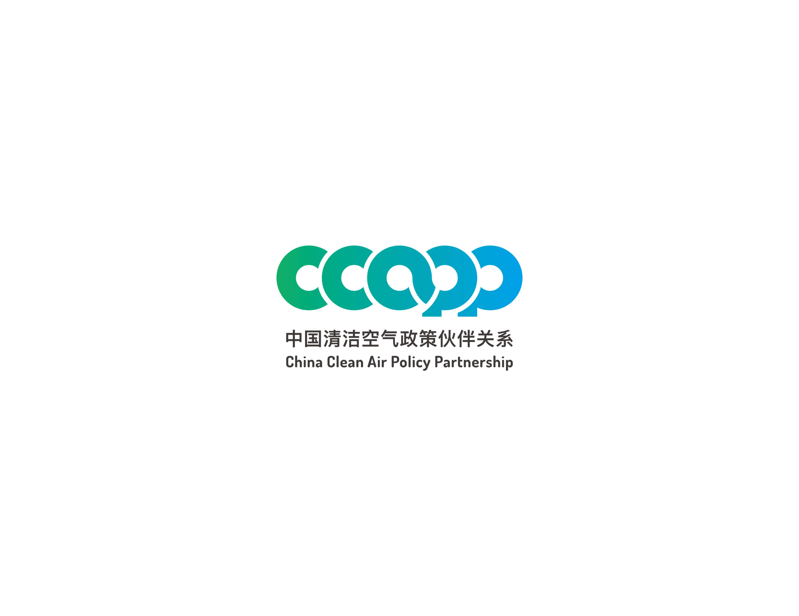
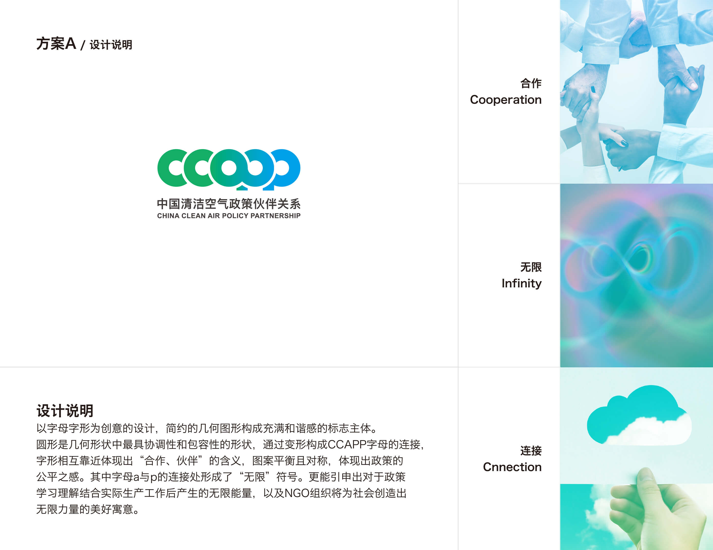
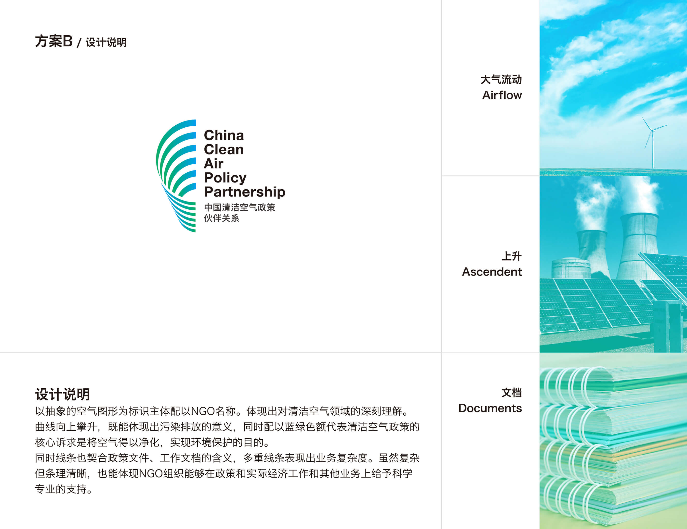
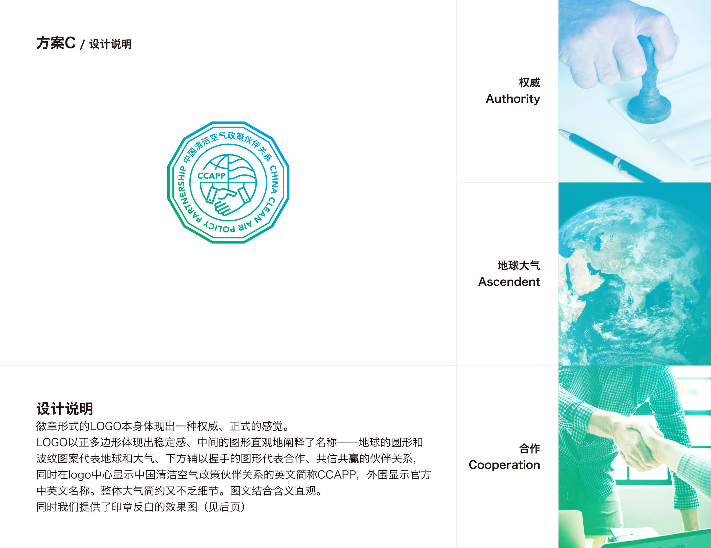
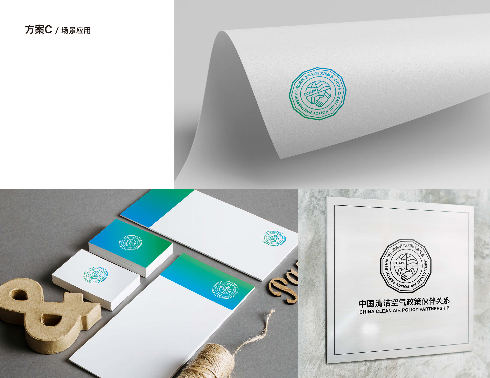
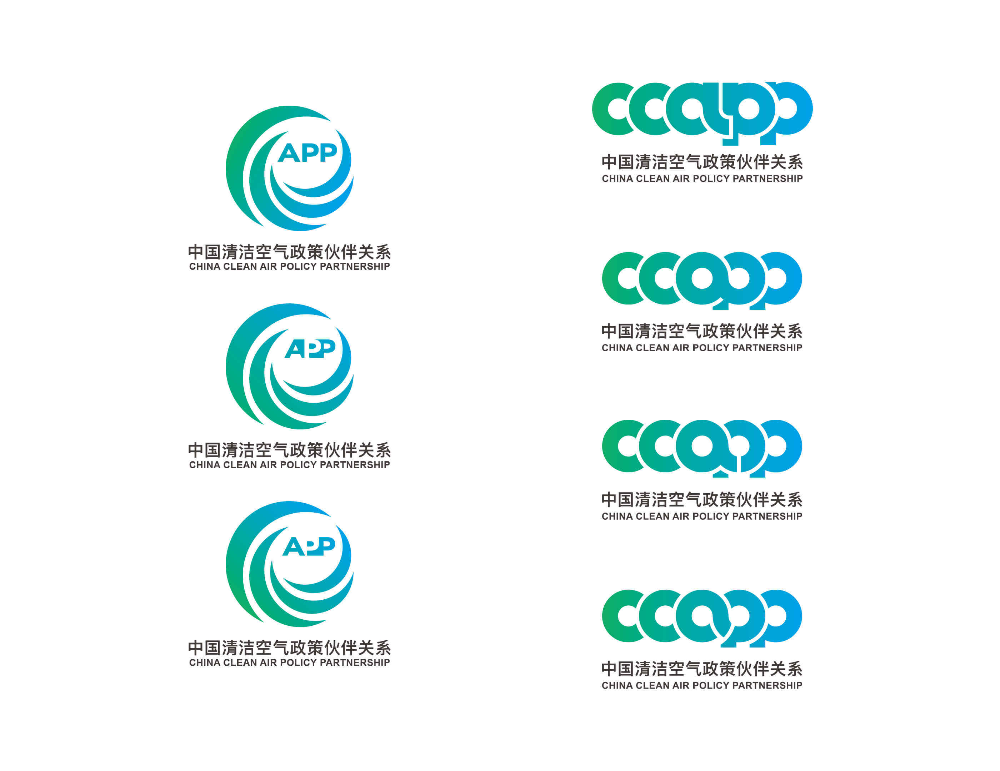

LOGO Design for CCAPP
Client: NGO
CCAPP China Clean Air Policy Partnership
Final Version

CCAPP是一家NGO组织
CCAPP重点做清洁空气政策，方向是Climate Change and Human Health。
对于logo的需求是CCAPP几个字母缩写及中文要体现在logo中
Proposals




Other Proposals
